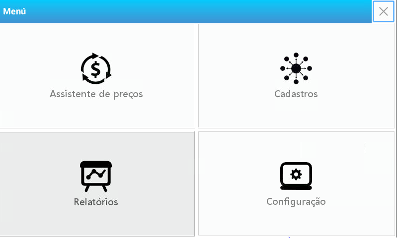
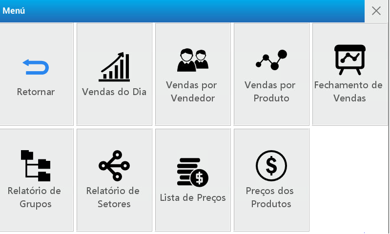
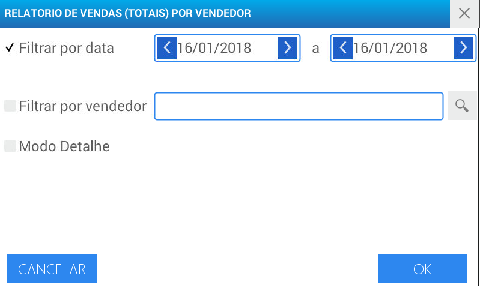
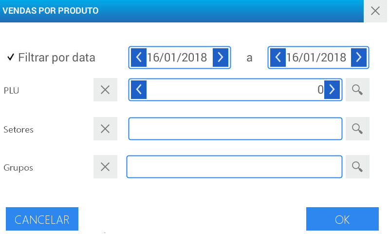
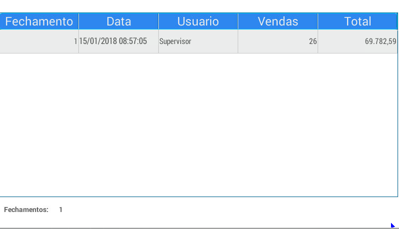
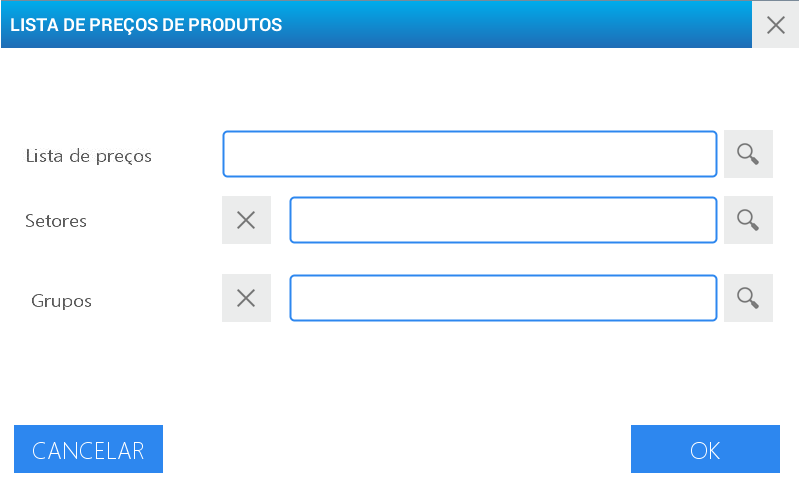
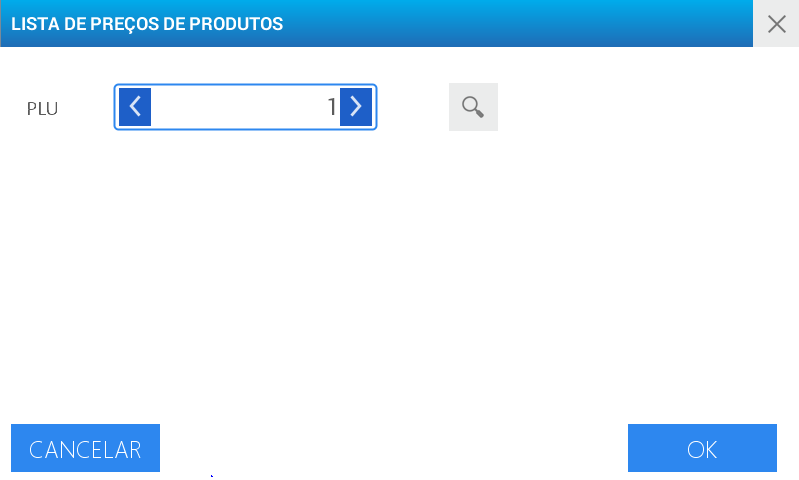

Relatórios
Permite imprimir em papel contínuo o total de vendas do dia, produtos ou vendedor, E relatórios de cadastros de grupos, setores e preços.


| Relatórios | Detalhes |
|---|---|
| Vendas do dia | Total de vendas executadas |
| Vendas por vendedor | Soma de vendas realizadas por cada VENDEDOR |
| Vendas por produto | Valor total de vendas de cada produto |
| Fechamento de vendas | Encerramento das vendas com limpeza de memória de totais das vendas |
| Cadastro de grupos | Detalhes dos grupos cadastrados |
| Cadastro de setores | Descrição dos setores ativos |
| Lista de preços | Listas de preços em uso |
| Preços de produtos | Valor dos produtos em cada lista de preços ou condições |
Vendas do dia
Esta opção permite obter os detalhes dos totais de vendas concretizadas de acordo com o período selecionado.
Acesse o menu pressionando a tecla
Selecione o usuário e digite a senha correspondente.
Pressione Aceitar
Escolha a opção Relatórios localizado no canto inferior esquerdo da tela
Será visualizado o menu completo deste módulo. Pressione Vendas do Dia
Utilize os filtros para determinar o relatório conforme a sua necessidade
Ative o tipo de filtro a ser utilizado e/ou o Modo Detalhado pressionando os campos em cinza que se encontram no início de cada opção. Uma vez realizada esta operação serão visualizados as marcações para habilitação dos mesmos.
Para utilizar o filtro por data selecione o período desejado utilizando os campos de data-hora.
Para realizar o relatório de vendas por vendedor utilize o menu de busca para selecionar o usuário
O modo detalhado possui informações ampliadas das vendas executadas no período escolhido:
- Data
- Nº Ticket
- Subtotal
Pressione Aceitar
Vendas por vendedor
Esta opção mostra o total de vendas realizadas por cada VENDEDOR juntamente com as de PRÉ-EMPACOTAMENTO.

Selecione a opção Vendas por vendedor e execute os passos a seguir:
Ative o tipo de filtro a ser utilizado e/ou use o Modo Detalhado clicando sobre os campos em cinza que se encontram no inicio de cada opção. Una vez realizada esta operação serão visualizadas as marcações para habilitação dos mesmos.
Selecione o período desejado utilizando os campos de data-hora.
Utilize o menu de busca para selecionar o usuário à verificar
O modo detalhado possui informações ampliadas das vendas executadas no período escolhido:
- Data
- Nº Ticket
- Subtotal
Pressione Aceitar
Vendas por produto
Esta opção possibilita visualizar o total de vendas de cada produto processado pela balança.

Selecione a opção Vendas por produto e execute os passos à seguir:
Selecione o período desejado utilizando o campo Filtrar por data
O campo PRODUTO são observados os detalhes das vendas de um produto em particular. Utilize a busca e procure o produto a ser utilizado no relatório.
Os campos de Setores e Grupos podem ser utilizados como filtro no relatório para facilitar a busca.
Pressione Aceitar.
Fechamento de vendas
Esta opção executa o fechamento das vendas, uma vez que já se tenha gerado os relatórios necessários APAGAR DA MEMÓRIA os totais de vendas realizadas para que se possa iniciar um novo período.

Para eliminar da memória do equipamento os totais de vendas realizados, Acesse a opção Fechamento de Vendas e pressione Fechar Vendas localizado na margem superior direito.
Após realizar esta ação, será visualizada uma tela para confirmar ou cancelar a operação.
Relatório de grupos
Realiza a impressão direta do relatório dos grupos disponíveis
Para obter os detalhes dos grupos criados selecione Relatório de Grupos e a impressão será executada automaticamente.
Relatório de setores
Esta opção imprime o relatório de setores cadastrados na balança, Pressionando sobre a opção Relatório de setores o relatório será impresso automaticamente.
Relatório de Lista de preços
Imprime de maneira rápida as listas de preços ativas na balança.

Selecione a opção Lista de Preços
Utilize o menu de busca para selecionar a Lista de Preços desejada.
Para o refino da busca, utilize os campos de Setores e Grupos.
Pressione Aceitar.
Preços de produtos
Executa uma impressão detalhada dos valores dos produtos.

Para utilizar este relatório siga os seguintes passos:
Acesse a opção Preços de Produtos
Utilize a busca inserindo o código do produto a ser localizado.
Pressione Aceitar.